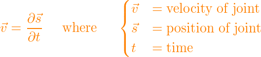

xalinou
I’m trying to do something like this in Urho:
But, no matter what i do, after enabling the ragdoll on a model, it just “dies” and lays down. Can my animation be blended into the ragdoll itself?
I’m trying to do something like this in Urho:
But, no matter what i do, after enabling the ragdoll on a model, it just “dies” and lays down. Can my animation be blended into the ragdoll itself?

My guess is that you need to use the transformation from the animation as linear & angular force on the rigid bodies (while taking time into account).
Probably at the bone level.
Though it kinda looks like it doesn’t get any resistance from collision, meaning it doesn’t use forces. So it might just be setting the rigid body / bone local positions while having active physical simulation.
How can i convert a bone translation/rotation to a physic force in Bullet? Is that even possible? I’m lost.


You can do that by taking the derivative of each bone’s position and angle over time:

From that you can calculate the impulse (where m is the mass of the joint, p is the impulse).
You can then pass the impulse to bullet
body->applyCentralImpulse( btVector3( p ) );(same for angles, this example was for translations)
This whole procedure is fairly unstable though. You’ll definitely have to apply limits to the maximum force that is allowed. Your animation can quickly generate infinite forces or otherwise forces that shouldn’t be physically possible.
In the end, bullet will reverse everything you did. That is, it will take the impulse, integrate it over the next time step, divide by mass, and it will arrive at where you began. Perhaps there’s a shortcut where you can simply set the position of the joint instead of applying an impulse to the joint.
Thanks a lot for the detailed information. But i’m curious about the impulses: won’t they affect the animation? Or they only will have an effect when i foreach the bones and set:
GetBone(i)->animated_ = false;[quote=“xalinou”]Thanks a lot for the detailed information. But i’m curious about the impulses: won’t they affect the animation? Or they only will have an effect when i foreach the bones and set:
GetBone(i)->animated_ = false;
[/quote]
You’ll have to have two copies of the skeleton and the model will only be attached to one of them (the physically simulated one). The other is invisible and serves for calculating the impulses.
I just realised, calculating impulse is just one half of the problem. Once the model hits something, it will get out of sync with the animation pose. What you really need to do is compare the animation pose with the current state of the model and derive your forces from there.
You can do that by taking the derivative of each bone’s position and angle over time:
From that you can calculate the impulse (where m is the mass of the joint, p is the impulse).
You can then pass the impulse to bullet
body->applyCentralImpulse( btVector3( p ) );(same for angles, this example was for translations)[/quote]
You can just get the change vector from the last position to the current one.
You’ll also have to divide by delta time. That’s what the derivative is.

in Unity, there’s a nice feature called animatePhysics: docs.unity3d.com/ScriptReferenc … ysics.html
What if you set a rigidbody for all bones, but SetKinematic(true), and when the character is killed, you disable it?

I tried using kinematic rigidbodies initially, but later realized that A) Bullet won’t apply forces to them, so B) they won’t react plausibly when hit, and C) the handover from kinematic to dynamic mode is not clean - the dynamic bodies won’t automatically inherit momentum from the animated state.
I’m currently experimenting with a dynamic rigidbody armature whose node transforms are overwritten with bone animation transforms at the end of the physics step. The idea is to let Bullet perform full dynamics on the bodyparts, but then overwrite whatever Bullet did in order to apply the animated skeletal rig to the rigidbody armature.